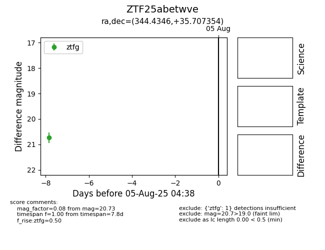

Target ZTF25abetwve at 2025-08-05 04:38, see:
FINK: fink-portal.org/ZTF25abetwve
Lasair: lasair-ztf.lsst.ac.uk/objects/ZTF25abetwve
ALeRCE: alerce.online/object/ZTF25abetwve
alt names
ZTF25abetwve (ztf,fink)
coordinates:
equatorial (ra, dec) = (344.4346,+35.70735)
galactic (l, b) = (98.3532,-21.67989)
photometry
last ztfg=20.73
1 ztfg detections
